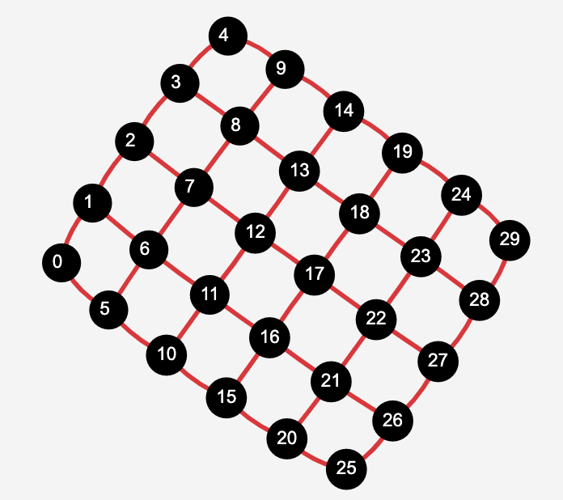
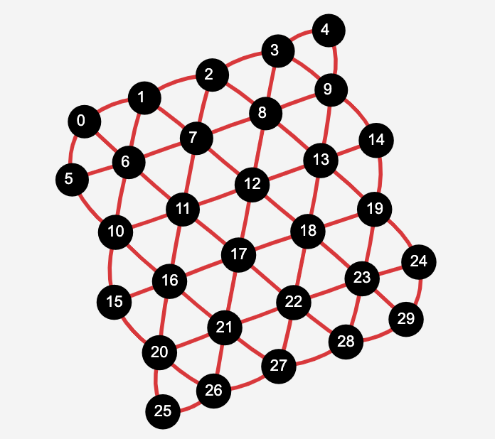

QRydDemo WebAPI
The QRydDemo project at the moment provides access to a Quantum Hardware Emulator via a REST-API.
qoqo-qryd and roqoqo-qryd allow interfacing with the WebAPI.
The WebAPI can be accessed on the level of direct API calls.
It is also possible to use the WebAPI as an EvaluatingBackend for general (non-parameterized)
qoqo QuantumPrograms via the WebAPI as described in Executing quantum programs.
Getting access to the WebAPI
To use the WebAPI, a QRydDemo account is required. Users can register via the online registration form. Access is controlled via a Token. The token can either be directly provided to the APIBackend on creation or the backend tries to read it from the QRYD_API_TOKEN environmental variable.
Devices
At the moment the QrydDemo WebAPI supports two device emulators. Both support 30 qubits, one in a square and another with a triangular topology.
 {kind=link}
{kind=link}
The Emulators allow the user to set the phase shift in the PhaseShiftedControlledZ native gate and the seed for the random number generator. In qoqo-qryd these are set when creating the devices.
import numpy as np
from qoqo_qryd.api_devices import QrydEmuSquareDevice
from qoqo_qryd import APIBackend
# Creating a new device. All calculations on this device
# will use 1 as the random seed and 0.23 as the phase shift
# in the controlled Phase
device = QrydEmuSquareDevice(pcz_theta=0.23, seed=1)
# Create a new backend that will use the device.
# Timeout controls how often the backend is queried
# for a result when backend is used as an evaluating backend.
# The wait time between queries is 0.2 seconds.
backend = APIBackend(device=device, timeout=20)
APIBackend
The APIBackend of qoqo-qryd supports the four direct API-calls of the QRydDemo WebAPI:
Queueing a job of running a qoqo QuantumProgram with a ClassicalRegister measurement (
post_job(quantumprogram)).Querying the status of the job (
get_job_status(job)`).Retrieving the results of the job (
get_job_result(job)`).Deleting a posted job (
delete_job(job)).
Additional information can be found on the API documentation
The four API calls can be used to obtain a result the following way:
import numpy as np
from qoqo import operations as ops
from qoqo import Circuit
from qoqo import QuantumProgram
from qoqo_qryd.api_devices import QrydEmuSquareDevice
from qoqo.measurements import ClassicalRegister
from time import sleep
from qoqo_qryd import APIBackend
# Creating a new device. All calculations on this device
# will use 1 as the random seed and 0.23 as the phase shift
# in the controlled Phase
device = QrydEmuSquareDevice(pcz_theta=0.23, seed=1)
# Create a new backend that will use the device.
# Timeout controls how often the backend is queried
# for a result when backend is used as an evaluating backend.
# The wait time between queries is 0.2 seconds.
backend = APIBackend(device=device, timeout=20)
# Creating a quantum circuit that will be measured
circuit = Circuit()
circuit += ops.RotateX(0, np.pi/2)
circuit += ops.RotateX(2, np.pi/2)
circuit += ops.RotateX(4, np.pi/2)
circuit += ops.DefinitionBit("ro", 6, is_output=True)
circuit += ops.PragmaRepeatedMeasurement("ro", 1000, None)
# The direct API calls only support ClassicalRegister measurements
measurement = ClassicalRegister(constant_circuit=None, circuits=[circuit])
program = QuantumProgram(measurement=measurement, input_parameter_names=[])
# First API call: queueing the job
# Returns url for further queries.
job_location = backend.post_job(program)
for i in range(20):
print(i)
sleep(30)
# Query the job status via an API call
job_status = backend.get_job_status(job_location)
if job_status["status"] == "completed":
# If the job is completed retrieve result via API call
result = backend.get_job_result(job_location)
print(result)
break
# alternatively delete job
# backend.delete_job(job_location)